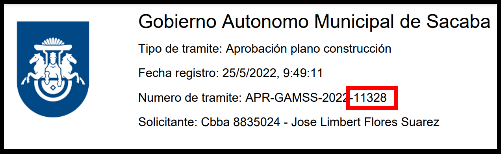
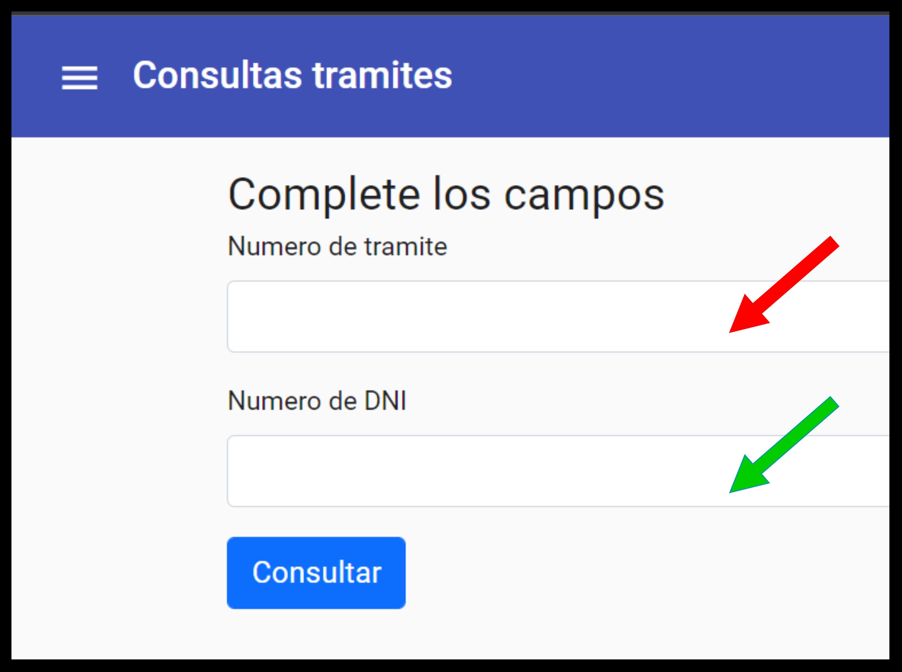

Para la consulta del tramite debe usar los digitos en el "Numero de tramite" de la ficha entregada al momento del registro
Debe introducir los campos necesarios. Numero de tramite y Numero del documento de identidad proporciados al momento de la solicitud
Seleccione el boton "Consultar" para ver los detalles
Solicitante: {{Tramite.nombres|uppercase}} {{Tramite.paterno|uppercase}} {{Tramite.materno|uppercase}}
Dni: {{Tramite.expedido}} {{Tramite.dni}}
Estado: {{Tramite.estado | uppercase}} (El tramite aun no se ha comenzado a evaluar)
Estado: {{Tramite.estado | uppercase}} (El tramite tiene observaciones, debe apersonarse a la institucion)
Estado: {{Tramite.estado | uppercase}} (El tramite esta siendo evaluado)
Estado: {{Tramite.estado | uppercase}} (El tramite ha sido devuelto para su reevaluacion)
Estado: {{Tramite.estado | uppercase}} (El tramite ha sido evaludado y finalizado)
Estado: {{Tramite.estado | uppercase}} (La realizacion del tramite ha sido cancelada)
EL tramite no tiene observaciones
| Descripcion | {{element.detalle}} | Situacion |
Corregido
No corregido
|
Fecha de registro | {{element.fecha_registro |date}} |
|---|